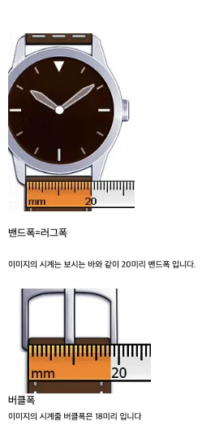
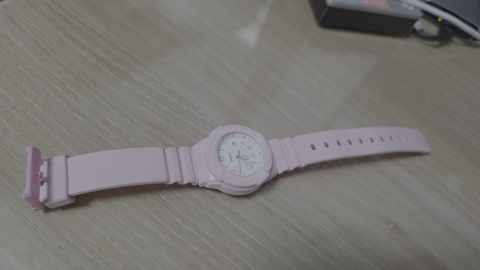

연서공개 아카이브2026-10-07
2026-10-07 Casio LRW-200H-4B2 시계줄 규격 조사 및 색상별 3개 구매
LRW-200H-4B2 핑크 모델의 교체용 시계줄 규격과 구매 기록을 정리한 공개본입니다.
핵심 요약
| 대상 시계 | Casio LRW-200H-4B2 |
|---|---|
| 러그폭 | 14 mm |
| 어깨폭 | 18 mm |
| 구매처 | AliExpress |
| 구매 | 색상별 총 3개 |
| 상태 | 구매 완료 |
규격
| 구분 | 확인값 | 비고 |
|---|---|---|
| 모델 | LRW-200H-4B2 | 핑크 B2 모델 |
| 러그 안쪽 폭 | 14 mm | 교체줄 연결부 핵심 규격 |
| 어깨폭 | 18 mm | 연결부 바깥쪽으로 넓어지는 부분 |
| 소재 계열 | 우레탄/레진 | 원래 밴드 계열 |
| 색상 식별 | 4B2 / Pink B2 | 모델 식별용 표기이며 HEX 코드로 확정하지 않음 |
구매 기록
| 구매일 | 2026-10-07 |
|---|---|
| 판매처 | AliExpress |
| 수량 | 3개 |
| 선택 | 색상별 구매 |
| 주문 상세 | 공개본에서는 주문번호가 포함된 URL을 제외 |
구매한 3개의 정확한 옵션 색상명은 현재 공개 가능한 기록에서 확인되지 않아 임의로 작성하지 않았습니다.
이미지


경과
- 교체용 시계줄 구매를 위해 모델과 장착부 규격을 조사했다.
- 러그 14 mm / 어깨 18 mm를 기준 규격으로 확정했다.
- AliExpress에서 색상별 총 3개의 호환 시계줄을 구매했다.
- 공개본에서는 주문번호·주문상세 URL·배송정보를 제외했다.